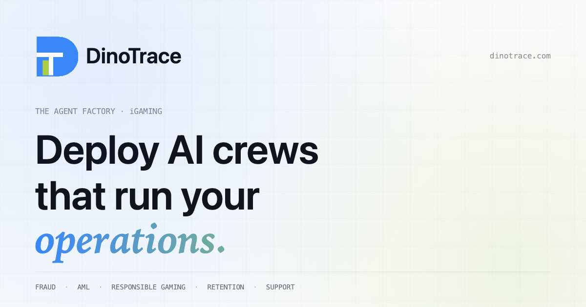

Every platform renders the same Open Graph + Twitter tags a little differently. Here's how the new social card (1200×630) lands on the places people actually share it.
iMessage · WhatsApp · SignalRich link preview

DinoTrace — The Agent Factory for iGaming
Deploy intelligent agent crews that detect fraud, stop phishing, and automate iGaming operations.
dinotrace.com
SlackUnfurled link
dinotrace.com
DinoTrace — The Agent Factory for iGaming | Fraud, AML & Automation
Deploy intelligent agent crews that detect fraud, stop phishing, and automate iGaming operations — through conversation, not code.
LinkedIn postLarge image card
DinoTrace
The Agent Factory for iGaming · 2d
We're opening early access. If you're running ops at an iGaming operator and fraud, AML, or bonus abuse eat your week — let's talk. 👇
dinotrace.com
DinoTrace — The Agent Factory for iGaming
X (Twitter)summary_large_image
DinoTrace
@dinotrace · 2d
Ship AI crews for fraud, AML & retention in iGaming — no YAML, no engineering ticket. Early access open.
🔗 dinotrace.com
DinoTrace — The Agent Factory for iGaming
Deploy intelligent agent crews that detect fraud, stop phishing, and automate iGaming operations.